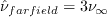
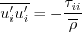

Results are shown here from 2 compressible codes
so that the user may compare their own compressible code results. Multiple grids were
used so the user can see trends with grid refinement. Different codes will behave
differently with grid refinement depending on many factors (including code order of accuracy
and other numerics),
but it would be expected that as the grid is refined the results
will tend toward an "infinite grid" solution that is the same.
Be careful when comparing details: any differences in boundary conditions or flow conditions
may affect results.
Two independent compressible RANS codes,
CFL3D and FUN3D, were used to compute this
zero-pressure-gradient flat plate flow with the Spalart-Allmaras turbulence model
(version SA-QCR2013 - see full description on the
Spalart-Allmaras page). The full series of 5 grids were used.
CFL3D is a cell-centered structured-grid code, and FUN3D is a
node-centered unstructured-grid code (it can solve on mixed element grids, so this case
was computed on hexahedral grids).
Both codes were run with full Navier-Stokes.
and both used first-order upwinding for the advective terms of the turbulence model.
The codes were run to nearly machine-zero iterative convergence, so
results of interest were well within normal engineering tolerance and
plotting accuracy.
For QCR2013, in current experience, the mut*sqrt(2*Smn*Smn)
term in the model can sometimes cause numerical
problems. The CFL3D and FUN3D results on this page employ a limiter, not allowing 2*Smn*Smn
to exceed 1.2*[2*Wmn*Wmn]. A (more recent) recommended practice is to employ QCR2013-V instead.
See description on the Spalart-Allmaras page).
It should be noted that the QCR2013 correction has very little effect in this case,
but the influence is detectable (compared to SA) as the grid is refined.
It is also important to note that - other than in the normal stresses themselves - the
differences between SA-QCR2000 and SA-QCR2013 results are not detectable for
this case.
For the CFL3D and FUN3D tests reported below, the turbulent inflow boundary condition used for SA-QCR2013 was:
.
For the interested reader, typical input files for this problem are given here:
CFL3D:
FUN3D:
Most of the following SA-QCR2013 results are plotted below against standard SA results as well as against
SA-QCR2000 results, for comparison.
Note that the CFL3D and FUN3D SA results are from the
SA Expected Results page, and were run many years ago (CFL3D V6.5 and FUN3D rev 32421).
However, the grid-converged solutions have not changed.
The SA-QCR2000 results are from the
SA-QCR2000 Expected Results page.
The following plot shows the convergence of the wall skin friction coefficient at x=0.97008 with
grid size for both codes, for SA, SA-QCR2000, and SA-QCR2013.
In the plot, the x-axis is plotting 1/N1/2, which is proportional to
grid spacing (h).
At the left of the plot, h=0 represents an infinitely fine grid.
As can be seen, the two codes agree well as the grid is refined. There is no meaningful detectable difference
between the SA-QCR2000 and SA-QCR2013 results. However, there is a small
consistent difference between these models and SA
on the finer grids.
SA-QCR2013 and SA-QCR2000 yield a slightly lower level of grid-converged skin friction at this location.
Using the uncertainty estimation procedure from the Fluids Engineering Division of the ASME (Celik, I. B.,
Ghia, U., Roache, P. J., Freitas, C. J., Coleman, H., Raad, P. E.,
"Procedure for Estimation and Reporting of Uncertainty Due
to Discretization in CFD Applications," Journal of Fluids Engineering, Vol. 130, July 2008, 078001, https://doi.org/10.1115/1.2960953), described in Summary of Uncertainty Procedure,
the finest 3 grids yield the following for skin friction coefficient for SA-QCR2013 at x=0.97:
| Code |
Computed apparent order, p |
Approx rel fine-grid error, ea21 |
Extrap rel fine-grid error, eext21 |
Fine-grid convergence index, GCIfine21 |
| CFL3D |
1.99 |
0.063% |
0.021% |
0.026% |
| FUN3D |
1.38 |
0.057% |
0.035% |
0.044% |
The data file that generated the above plot is given here:
cf_convergence_saqcr2013.dat.
Note that in this particular flat plate case, when looking at the total integrated drag coefficient on the plate,
formal order-property convergence may not be generally achievable. This is because the skin friction
(which is the only contributor to the drag in this case)
is singular (tends toward infinity) at the leading edge. The finer the grid, the more nearly singular
the local behavior on a finite grid.
There also appears to be some locally minor
anomalous behavior at the aft end of the plate, which is likely a function of
how each code handles the interaction of the solid wall boundary condition with the
outflow pressure boundary condition near the bottom right corner of the grid.
Nonetheless, both codes are tending toward a similar integrated drag coefficient value
as the grid is refined, and SA-QCR2013 yields slightly lower grid-converged drag values than SA as the grid is refined.
Again, the differences between SA-QCR2000 and SA-QCR2013 are too small to be meaningful.
Using the uncertainty estimation procedure from the Fluids Engineering Division of the ASME (Celik, I. B.,
Ghia, U., Roache, P. J., Freitas, C. J., Coleman, H., Raad, P. E.,
"Procedure for Estimation and Reporting of Uncertainty Due
to Discretization in CFD Applications," Journal of Fluids Engineering, Vol. 130, July 2008, 078001, https://doi.org/10.1115/1.2960953), described in Summary of Uncertainty Procedure,
the finest 3 grids yield the following for drag coefficient for SA-QCR2013:
| Code |
Computed apparent order, p |
Approx rel fine-grid error, ea21 |
Extrap rel fine-grid error, eext21 |
Fine-grid convergence index, GCIfine21 |
| CFL3D |
1.79 |
0.073% |
0.030% |
0.037% |
| FUN3D |
0.92 |
0.259% |
0.290% |
0.363% |
The data file that generated the above plot is given here:
drag_convergence_saqcr2013.dat.
The surface skin friction coefficient from both codes on the finest 545 x 385 grid
over a portion of the plate is shown in the next plot. Again, local anomalous behavior exists near the leading
edge (x=0) due to singular behavior of the solution,
and near the trailing edge (x=2) most likely due to boundary condition
interaction. These behaviors differ for the codes, and result in small local deviations that
can be seen when zoomed into the two locations. But the codes are seen to yield nearly the same results
over most of the plate. Results from SA-QCR2000 and SA-QCR2013 are essentially indistinguishable, and these
yield slighty lower results than SA.
The data file that generated the above plot is given here:
cf_plate_saqcr2013.dat.
The eddy viscosity contours (nondimensionalized by freestream laminar viscosity) from SA-QCR2013
from the two codes on the finest 545 x 385 grid are shown
in the following plots (y-scale expanded for clarity). They are essentially indistinguishable.
(Note legends do not necessarily reflect min and max values.)
The data files that generated the above plots are given here:
mut_contours_saqcr2013_cfl3d.dat.gz (1.8 MB) (CFL3D) and
mut_contours_saqcr2013_fun3d.dat.gz (2.6 MB) (FUN3D).
that these are both gzipped
Tecplot
formatted files, so you must either have Tecplot or know how to read their format in order to use these
files.
Using the finest 545 x 385 grid, a detail of the extracted nondimensional eddy viscosity profile at
x=0.97 is shown below. They are essentially the same for both codes.
The data file that generated the eddy viscosity profile at x=0.97 is given here:
mut_97_saqcr2013.dat.
The main advantage to employing the quadratic constitutive relation (QCR) in SA-QCR2013 is that it better represents
the turbulent normal stress differences in boundary layers. These may be important in some situations (for example,
when computing flow near corners). Below, results for
- 
are plotted for SA-QCR2013 on the finest grid. Results from CFL3D and FUN3D are nearly identical.
Note that QCR2013 includes a term that approximates the 2/3*rho*k term that is often ignored for
for SA-based models (because k does not "exist").
In QCR2013 this approximate term is included when evaluating the
turbulent stresses while solving the Navier-Stokes equations.
The k itself is approximated (see AIAA-92-0439) in QCR2013 by:
k = mu_t/rho*sqrt(2*Sij*Sij)/(2*a1), where a1 is taken to be 0.1333333.
(Note that this a1 is different than that used for output of the normal stresses on the
SA-QCR2000 Expected Results page and the
SA-RC-QCR2000 Expected Results page. So the ui'ui'
levels are somewhat higher here.)
Note that, as shown, the v component is "up" and the w component is spanwise.
The data file that generated the above plot is given in
uiprime_uiprime_saqcr2013_C+F.dat.
Results from OVERFLOW are shown alongside the CFL3D and FUN3D results below. All three codes are consistent
as the grid is refined.
Return to: 2D Zero Pressure Gradient Flat Plate Verification Case Intro Page
Return to: Turbulence Modeling Resource Home Page
Recent significant updates:
08/06/2019 - added mention of limiting used for QCR2013, including option of QCR2013-V
Page Curators: Christopher Rumsey,
Ethan Vogel,
Clark Pederson
Last Updated: 08/06/2019